Chapter 6 · Part 1 — Song on the Wind
“Peanut’s ,” said Annie. “We have to find her before she freezes.”
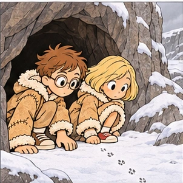
She her coat around her and headed across the snow.
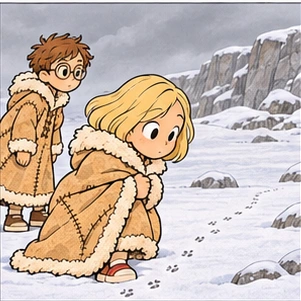
Jack on his backpack and .
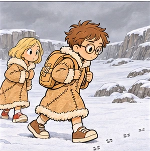
The mouse’s led them between the fallen rocks and back onto the open .
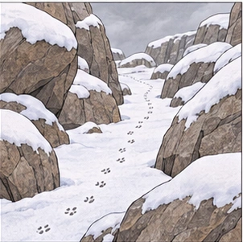
The wind blew harder. Snow swirled over the ground, covering the tiny .
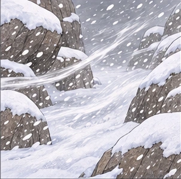
“I can’t see them anymore!” Annie.
She and Jack now stood in the middle of the plain. They at the windswept snow.
The mouse’s had .
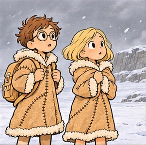
“Yikes,” Annie, staring up.
Jack followed her gaze. On one of the was a tiger. A giant tiger with two long, sharp .
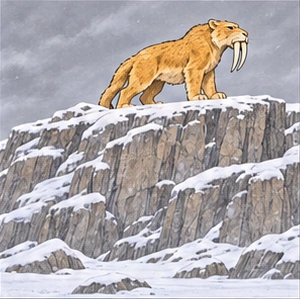
“A sabertooth,” Jack.
“I hope he doesn’t see us,” Annie.
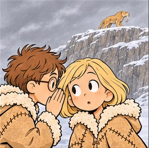
“Me too,” Jack back. “We’d better head back to the tree house.”
Jack and Annie very softly across the snow. Then Jack glanced back at the cliff.
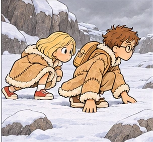
The sabertooth gone.
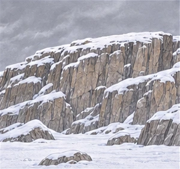
“ man,” he said. “Where is he?”
“Run to the trees!” Annie.
He and Annie started running. They ran over the snowy plain, heading toward the tall, trees in the .
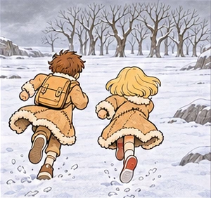
Jack heard a crack.
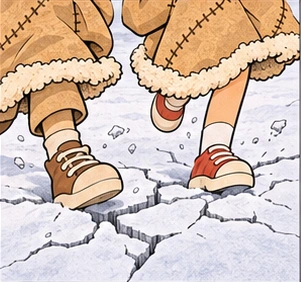
The ground caved in, and Jack with it.
Annie beside him.
They crashed down onto a heap of , snow, and earth.
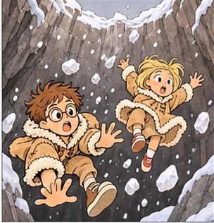
struggled to stand. Jack pushed his glasses into place.
“You all right?” he Annie.
“Yes,” she .
They both looked up. They were in a hole. All Jack could see were gray clouds moving overhead.
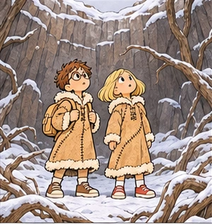
“This is a trap,” Jack said. “The Cro-Magnons must have put over this hole. Then the snow hid the branches. So we didn’t see them.”
“There’s no way out,” Annie.
She was right. They were helpless. The was too deep to climb out of.
“I feel like a trapped animal,” Annie .
“Me too,” Jack.
He heard a yowl in the .
“The sabertooth!” Annie.
Jack out the Ice Age book. He found a picture of the sabertooth. He read:
The sabertooth the fiercest beast of the Ice Age. It attacked humans as well as woolly mammoths and other large animals.
“ brother,” said Jack.
“Listen!” Annie him.
“What?” Jack .
“I hear .”
Jack listened. But all he heard was the .
“You hear it?” Annie.
“No,” Jack.
“ carefully.”
closed his eyes. He listened very carefully.
He heard the . But this time he heard another sound, too.
, haunting music.
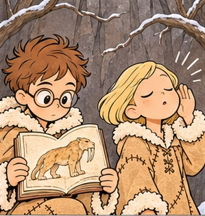
“Ahhh!” Annie.
Jack his eyes.
Staring down at them was a figure wearing and an owl .
“The ,” whispered Jack.
.
Peanut down at them, too!
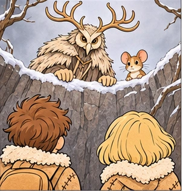